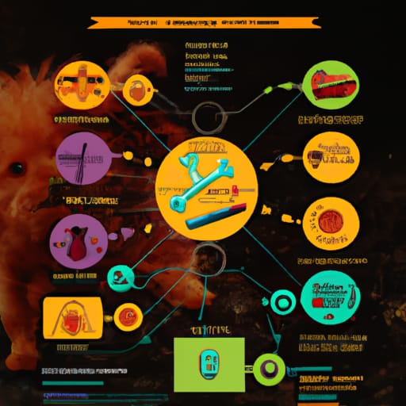

.--. .-.
( internet ) <----
( ) ) -->
"--" -----"
data .-----------. data (eventually)
------->{ } q }------------------>
"-----------'
.--. .-.
( internet )
( ) )
"--" -----"
| ^ sync request/response
v |
,---------. _..-------.._
| Ω-STAR |<------>|'-...___...-'|
'---------' | OurDB |
| ^ '-._________.-'
| '-------------.
| .-----------. |
'-->{ } q }-' async messaging
"-----------'
ADD 123 Movie{... version 1 ...}
ADD 444 Actor{...}
DEL 444
DEL 123
ADD 123 Movie{... version 2 ...}
retry v1
,------.
.-------. v2 v,-----X.
{ } q }---->| WELP |--->
"-------' '------'
.-------.
,>{ } dlq }
| "-------' v1
'--------------------.
.-------. ? ,-----X.
{ } q }---->| WELP |--->
"-------' '------'
while read msg; do process msg; donecurl with what I think it should be?retry * max attempts?tlc
$ tlc -config Example.cfg Example.tla
checking complex rules that match dogs with owners

borrowck, or Mufasa 🦁, it lives in you